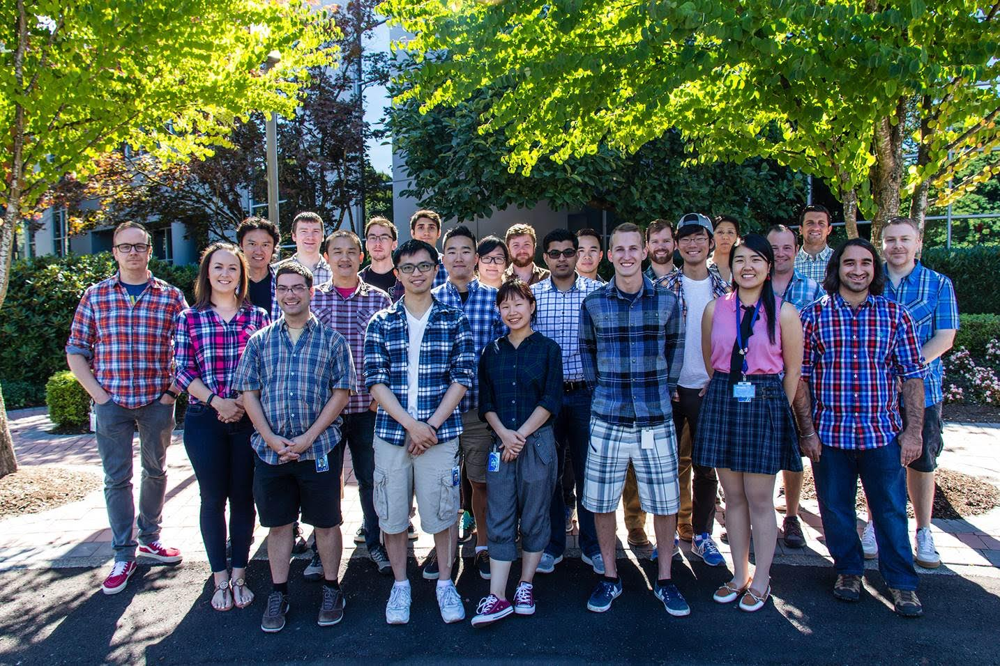
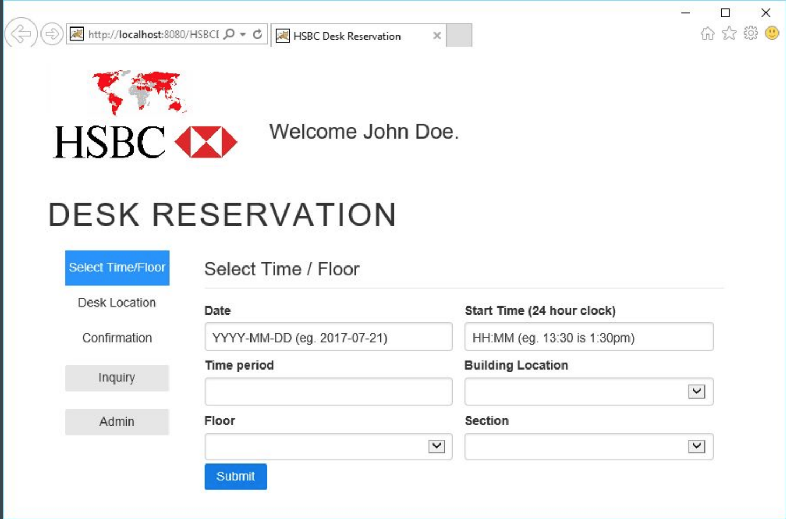
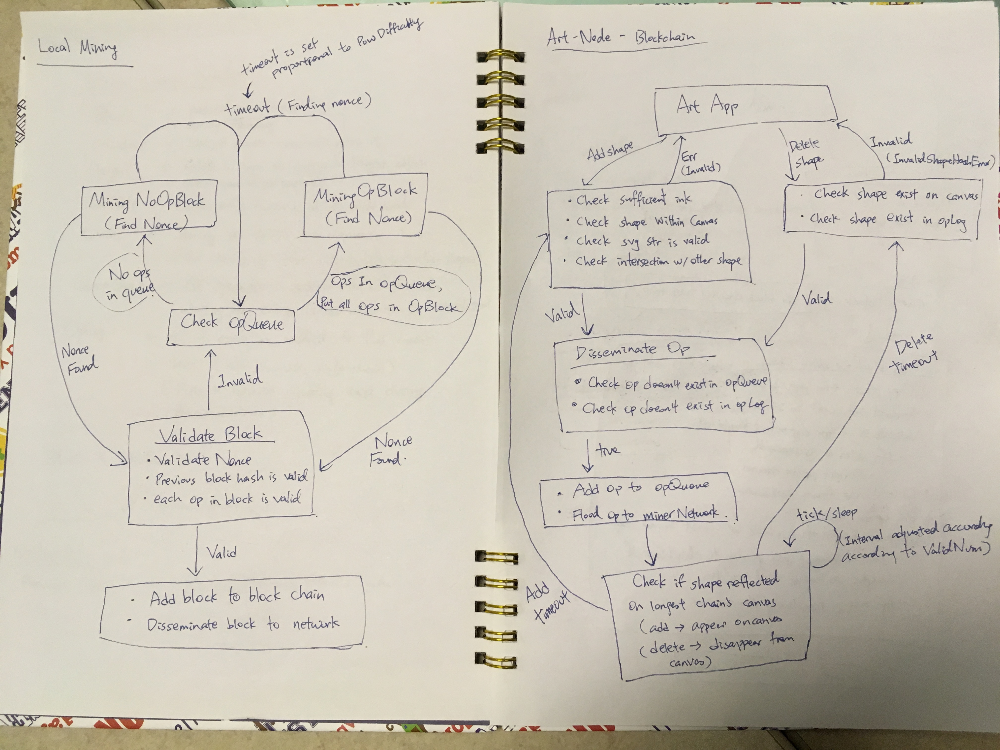

About
I graduated from University of British Columbia's computer science, software engineer program (BSc) in May, 2018. I enjoy working on interesting domains such as distributed systems and web development. While designing an app from scratch is always fun, I also enjoy diving into an unfamiliar codebase and explore the wonderland of surprises. I have one year of professional work experience from co-op at MDA's aviation team. I worked on frontend elements using MFC as well as building and testing flight path surfaces in C++. Near the end of the term, I was trusted with the design and implementation of a geodetic calculator user interface. The calculator is a testing tool that supports auto-formatting of coordinates, unit conversion, and saving and printing of calculated results.
Work Experience
MacDonald, Dettwiler and Associates (MDA)
 Aviation Systems
- Conducted regression tests using Standard Testing Description for Global Procedure Designer (GPD)
- GPD analyzes obstacles, terrain and produces optimal flight paths procedure for aircrafts
- Updated the Standard Testing Description
- Implemented GPD’s UI elements in C++/MFC and raise change request as needed
- Created flight surfaces around airport using geometry service tool (GEOM)
- Designed and implemented geodetic calculator user interface for internal testing
- Validated the accuracy of airport surfaces’ height and width using Excel spreadsheets and TurboCAD
Projects
HSBC Web App
Technology: Java, Spring MVC, Javascript, Angular.js, MySQL [code] I was the project manager and backend engineer for a school project called HSBC Desk Reservation. The web app uses Java and Spring MVC for its backend. I designed the backend API, laid out skeleton methods to link with MySQL and JavaScript frontend, set up email service using Google mail server, uploaded the app onto AWS EC2 Tomcat, and coordinated with the industrial technicians from HSBC. While I was not directly working on the frontend and database queries, I was actively involved in their design discussions and facilitated the team members’ communication and high-level work division.
Block Art
Technology: Golang [code] BlockArt is a blockchain-based system to support collaborative computer art projects. Each block in the chain adds/removes visual elements on a canvas that represents the artwork. The blockchain network is built to support thousands of nodes and uses a flooding protocol to disseminate operations on visual elements and generated blocks. Applications can interact with the blockchain and participate in an art project instance by using an API called blockedartlib that we built. The system validates authenticity of operations and uses a proof of work algorithm to guarantee fairness. The BlockArt system was deployed on the Azure cloud. This project was completed by a team of 4 software engineering students including me, I worked on the main blockchain miner logic while my teammates worked on the geometric intersection, UI, and art nodes logic.
Price Update Script
Technology: Python, xlrd [code]I wrote this python script for my father who works a sales. Every week, he updates the items in his excel spreadsheet with the new price lists compiled by his colleagues (also in excel format). Each of his colleague has their own style and format for the spreadsheet, and some items have the same IDs. Without unique IDs, the matching algorithm is doomed to become problematic. Therefore, my father invented his own naming system, adding a little i or o for the duplicated ones. This makes the matching ambiguous, so I implemented a weak matching and strong matching flag for this script. With strong matching, the price is only updated if they match exactly. On the other hand, weak matching first uses strong matching, then tries to match common prefix if strong matching does not find the item.